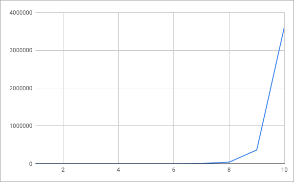

50%
A complexidade fatorial O(n!) é a pior das complexidades estudadas neste módulo.
O fatorial por definição na matemática, diz que seu valor é calculado através da multiplicação de um número por todos os seus antecessores, até chegar ao número 1 (excluindo o zero).
Ele é representado pelo sinal de exclamação "!", por isso dizemos O(n!), que significa notação Big-O com complexidade fatorial.
Vamos olhar e comparar alguns casos de fatorial na matemática para entender seu comportamento:
O que você pode concluir olhando para os casos listados acima?
Se você respondeu que o resultado cresce de modo muito rápido, você está correto!
Repare que o fatorial de 1 é 1, de 5 é 120, e de 10 é 3.628.800.
O que eu quero mostrar com isso é justamente a velocidade com que os resultados crescem a medida que adicionamos um único número.
E é essa analogia que levamos para o nosso algoritmo de complexidade fatorial.
Um algoritmo de complexidade fatorial, é um algortimo que em seu pocessamento cresce de modo muito rápido, o que significa que ele se tornará inviável ao tentarmos executá-lo com valores muito grandes.
Se colocarmos a complexidade fatorial em um gráfico, teremos a seguinte representação:

Olhando para o gráfico acima você consegue reparar em quão rápido a curva cresce a medida que incrementamos nosso número de entrada?
Portanto, o algoritmo de complexidade fatorial é aquele que necessita de muito processamento a medida que incrementamos nossos dados de entrada.
E o que concluímos com isso?
Concluímos que esse tipo de algoritmo é limitado a resolver problemas com poucos dados de entrada, pois ele terá uma performance muito ruim para grandes quantidades de dados.
Agora que você já sabe o que é um algoritmo de complexidade fatorial, vamos ver como seria uma implementação do mesmo na prática:
private void algoritmoComplexidadeFatorial(int numero) {
for (int i=0; i < numero; i++) {
algoritmoComplexidadeFatorial(i-1);
}
}
Repare que o método acima é bastante simples, porém tem uma performance muito ruim a medida que incrementamos nosso valor de entrada.
Isso ocorre porque o método acima chama a si mesmo dentro de um laço "for", fazendo com que muitas executações desse laço sejam executadas para cada número a mais adicionado a sua chamada, fazendo ele crescer em tempo de execução de modo muito similar a curva do fatorial demonstrado anteriormente.
Para você testar na prática e verificar a performance de um algoritmo fatorial, vamos criar uma classe contendo um experimento que demonstrará a performance do algoritmo estudado anteriormente.
Para isso crie um arquivo chamado OrdemFatorial.java com o seguinte código:
public class OrdemFatorial {
private static long numIteracoes;
private void executar(int numero) {
for (int i=0; i < numero; i++) {
OrdemFatorial.numIteracoes++;
executar(i-1);
}
}
private static void executarExperimento(OrdemFatorial ordemFatorial, int numero) {
OrdemFatorial.numIteracoes = 0;
long inicio = System.currentTimeMillis();
System.out.println("Executando experimento para número = " + numero);
ordemFatorial.executar(numero);
long fim = System.currentTimeMillis();
System.out.println("Experimento iterado " + OrdemFatorial.numIteracoes + " vezes.");
System.out.println("Experimento executado em " + (fim - inicio) + "ms\n");
}
public static void main(String[] args) {
OrdemFatorial ordemFatorial = new OrdemFatorial();
executarExperimento(ordemFatorial, 1);
executarExperimento(ordemFatorial, 2);
executarExperimento(ordemFatorial, 3);
executarExperimento(ordemFatorial, 4);
executarExperimento(ordemFatorial, 5);
executarExperimento(ordemFatorial, 10);
executarExperimento(ordemFatorial, 20);
executarExperimento(ordemFatorial, 30);
executarExperimento(ordemFatorial, 40);
executarExperimento(ordemFatorial, 45);
executarExperimento(ordemFatorial, 50);
}
}
O código acima chama o mesmo método estudado anteriormente, porém com diferentes valores de entrada, e registra o tempo de execução para cada chamada, assim como a quantidade de iterações por execução.
Usando os conceitos aprendidos no primeiro mólulo do curso, compile e execute a classe Java, você deverá ver no terminal algo similar a:
Executando experimento para número = 1
Experimento iterado 1 vezes.
Experimento executado em 1ms
Executando experimento para número = 2
Experimento iterado 2 vezes.
Experimento executado em 0ms
Executando experimento para número = 3
Experimento iterado 4 vezes.
Experimento executado em 0ms
Executando experimento para número = 4
Experimento iterado 7 vezes.
Experimento executado em 0ms
Executando experimento para número = 5
Experimento iterado 12 vezes.
Experimento executado em 0ms
Executando experimento para número = 10
Experimento iterado 143 vezes.
Experimento executado em 0ms
Executando experimento para número = 20
Experimento iterado 17710 vezes.
Experimento executado em 0ms
Executando experimento para número = 30
Experimento iterado 2178308 vezes.
Experimento executado em 7ms
Executando experimento para número = 40
Experimento iterado 267914295 vezes.
Experimento executado em 638ms
Executando experimento para número = 45
Experimento iterado 2971215072 vezes.
Experimento executado em 6656ms
Executando experimento para número = 50
Experimento iterado 32951280098 vezes.
Experimento executado em 72958ms
Verifique o tempo de execução e número de iterações para ver como a performance diminui a medida que adicionamos valores maiores de entrada.
Aproveite também para testar a execução com outros valores, até estar confortável com o entendimento de execução desse algoritmo.